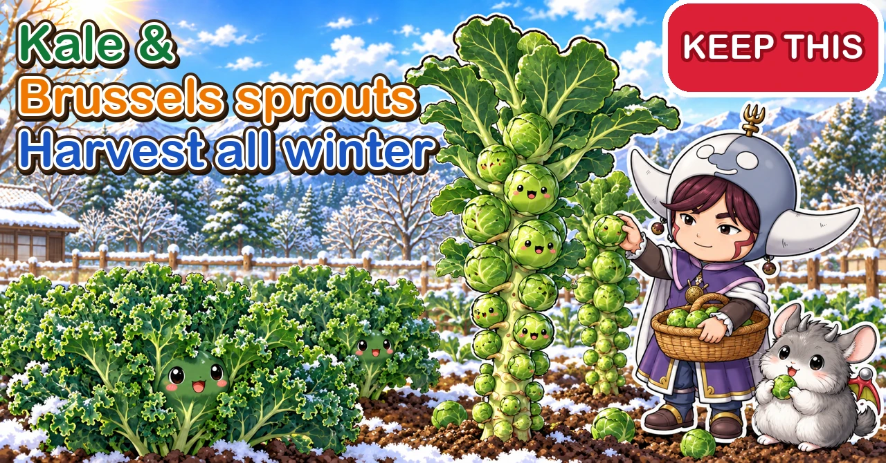
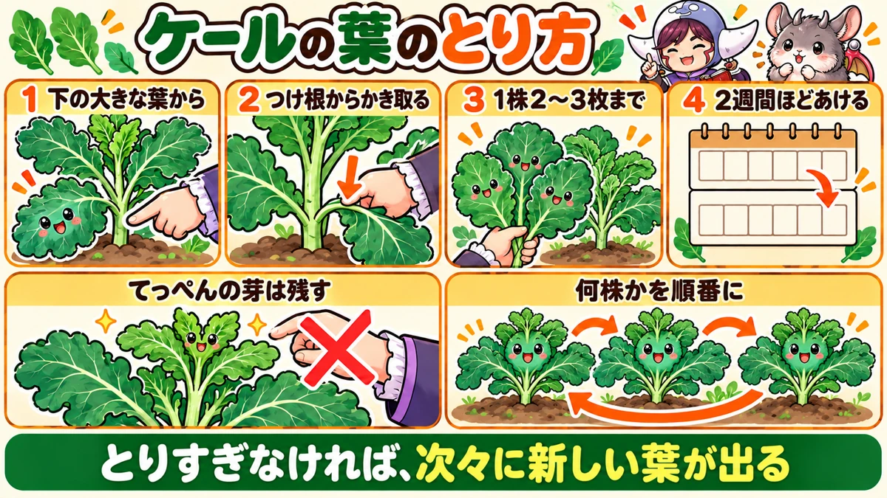

Kale and Brussels sprouts 🥬 Two different harvests from the cabbage family

🥬 “I can grow cabbage and broccoli, but I would like to try something a little different.”
🥬 “How can I keep taking kale leaves without exhausting the plant?”
🥬 “My Brussels sprouts are there, but the little sprouts stay small.”
Hello, I'm Eiko. Eight years of growing vegetables organically and without pesticides, and a teaching licence in science.
Kale and Brussels sprouts are both members of the cabbage family, but they give you a completely different harvest. Kale makes leaves rather than a head, so you can strip a few at a time for a long season. Brussels sprouts make side buds at the leaf axils along a tall stem, where each bud becomes a little cabbage. This guide follows both crops from seed to winter harvest.
How to use this guide
Read the kale section if you want a repeated leaf harvest, or go straight to the Brussels sprouts section if you want little heads along a stem. Seedling raising and insect protection apply to both, so keep those sections in mind whichever crop you choose.
Where you are: the seasonal timings here are for a home garden in central Japan. Shift the months to your own climate, first frosts and day length. The crops prefer cool weather and can grow through winter in many mild areas. In colder gardens, use fleece or a tunnel when hard frosts are expected.
The essentials: raise your own seedlings if plants are difficult to find, protect them with insect mesh from the start, and never remove all the leaves at once. Kale needs its growing tip; Brussels sprouts need enough leaves left at the top to keep making food.
① The quick guide to the two crops
Kale
- Family: the cabbage family, or brassicas; it is often described as close to the ancestral form of cabbage
- Part you eat: the leaves
- Sow: spring and late summer to autumn in places that are not very cold
- Raise: in a cell tray or small pot; plant out at five or six true leaves
- Harvest: two or three lower leaves per plant, then leave about two weeks before taking from that plant again
- Main rule: take a little, not a lot; grow several plants and rotate them
Brussels sprouts
- Family: the cabbage family
- Part you eat: the side buds at the leaf axils along the stem
- Sow: in summer, roughly late July to early August in central Japan
- Plant out: early to mid-September, when the seedling has about five true leaves
- Harvest: from late autumn into the New Year
- Main rule: strip lower leaves gradually, stake a tall plant, and pinch the top at the end

What this diagram says （図解の文字）
- How kale and Brussels sprouts grow
- "Kale" ／ "Brussels sprouts"
- "Grown for leaves; does not form a head" ／ "Lower leaves are large; upper leaves are young and tender"
- "About ping-pong-ball size (about 3 cm)" ／ "Small up to 10 cm from the bottom (about 1 cm)"
- "All are members of the cabbage family"
- "Grow well in cool weather. Seedlings are often raised from seed"
② What these vegetables have in common
Different shapes from the same family
Cabbage, broccoli, cauliflower, kale and Brussels sprouts are all brassicas. Over many generations, people selected plants that enlarged the part they wanted to eat. Cabbage was selected for a head of tightly wrapped leaves; broccoli for flower buds; kale for many useful leaves; and Brussels sprouts for side buds along the stem.
Cool weather suits them
Neither crop enjoys intense heat. They grow strongly in the cooler months from autumn into winter and are relatively hardy. A plant that is established before winter can continue to give a harvest when growth has slowed.
Different kale leaves
Curly kale, sometimes sold as frilly kale, has finely ruffled leaves. Other types have broad, flat leaves. Cavolo nero is a long-leaved, dark-green type with a bumpy surface. The flavour varies, but kale can be slightly bitter, with a taste people sometimes compare with parsley, lettuce and cabbage. Cooking it makes it easier for many people to eat.
Curly leaves can catch soil
Curly kale looks attractive and can be used as a salad leaf, but the folds collect soil in a windy, dusty plot. Choose a flat-leaved type if that is a problem, or lay straw around the base so rain and wind do not splash soil onto the leaves.
Why a Brussels sprout plant is tall
A cabbage makes one head at the top. A Brussels sprout plant sends a thick stem upwards, with leaves arranged around it. A side bud forms at the base of each leaf, and that bud becomes a sprout. A well-grown plant can exceed 50 cm and carry dozens of small sprouts.
③ Raising seedlings
Seed is often easier to find than plants
Garden centres usually carry cabbage and broccoli plants in autumn, but kale, Brussels sprouts and Cavolo nero can be hard to find as transplants. Raising your own plants gives you more choice and lets you start at the right time.
When to sow
For Brussels sprouts, sow from late July to early August, raise the seedling for about a month until it has roughly five true leaves, and plant it from early to mid-September. In places without severe winters, kale can be sown twice: in spring for an early summer harvest, and from late summer into autumn for an autumn and winter harvest.
Basic pot or cell-tray method
- Fill an 8 cm pot or a cell tray with seed-starting compost.
- Sow several seeds, cover them lightly and water thoroughly.
- Keep the compost from drying until shoots appear.
- Once they grow, thin gradually, keeping the strongest, until one seedling is left by the five-to-six true-leaf stage.
- Put insect mesh over the pots to keep cabbage caterpillars and aphids away.
- Plant out after about a month, when the seedlings have about five true leaves.
For kale, grow one plant in each planting spot once it has five or six true leaves.
Protect summer seedlings from sun
Summer sowing brings strong sun and heat. A bright, airy shade, such as the edge of a tree shadow, is ideal. If you do not have one, stretch shade cloth above the pots to soften the sun while keeping air moving.
Keep the mesh away from the leaves
Cabbage caterpillars and aphids are plentiful from summer into autumn. Cover the pots as soon as you sow. If the growing leaves touch the mesh, an adult insect can lay eggs through it, so use a tunnel or frame that leaves space around the plants.
How to sow in a pot
Make a hollow in the centre, sow four or five seeds, press them gently into the compost and draw compost over them. Press the surface down, water generously, and wait for the excess to drain. An 8 cm pot is enough for a brassica seedling that will be planted in about a month; it does not need the large pot used for a tomato or aubergine transplant.
Making a nursery bed for many plants
If you need several dozen seedlings, use a small nursery bed in a bright, airy half-shade.
- Make a bed about 120 cm long and 60 cm wide.
- Before sowing, cover it with clear plastic for about three weeks where practical. Solarising the soil can reduce soil insects and weed seeds.
- Make about three shallow rows.
- Sow at 2–3 cm intervals, leaving enough room to thin to about 15 cm.
- Cover, press the soil and water.
- Put an insect-mesh tunnel over the bed; add black shade cloth if the site is very sunny.
- Keep the soil from becoming bone dry and thin as the seedlings grow.
A nursery bed can produce many plants together, but cutworms may chew through stems at ground level. Solarising beforehand can reduce this risk.
Direct-sowing kale
Kale can be sown in the bed, but raising a plant in a pot is more dependable. The seeds come up and the cotyledons open within a few days. When the plant is about 10 cm tall with five or six true leaves, leave one plant and transplant it. For direct sowing, make holes about 1 cm deep, put one seed in each, cover, press and water.

What this diagram says （図解の文字）
- How to harvest kale leaves
- "1 Start with the large lower leaves" ／ "2 Strip from the base" ／ "3 Take 2–3 leaves per plant" ／ "4 Leave about 2 weeks"
- "Leave the growing tip"
- "If you do not take too much, new leaves appear" ／ "Move through several plants in turn"
④ Planting out and insect protection
Plant kale when it has five or six true leaves. It does not need a huge space and grows well in a container as long as the container is deep enough. Water thoroughly after planting and put the mesh on immediately.
Plant Brussels sprouts at five true leaves from early to mid-September. Set the root ball into the hole without leaving an air gap. Push soil firmly around the root ball with your fingers, water well and cover with insect mesh.
Fine mesh is especially useful while plants are young. Check the edge for gaps, and make sure leaves cannot press against the net. Adult cabbage white butterflies lay eggs on the underside of leaves, while aphids gather on new growth. Inspect under leaves even inside the tunnel.
Small aphid infestations
When there are only a few aphids, remove them with your fingers or a piece of tape. Some gardeners spray diluted soapy water, but under Japan's pesticide rules, soapy water isn't approved for pest control. Curly kale is sometimes said to be less attractive to insects than other brassicas, but it still needs checking.
⑤ How to harvest kale for a long time
Start with the lower leaves
The lower leaves are larger and firmer; the upper leaves are smaller and tenderer. Take lower leaves when you need a substantial cooking leaf, or young upper leaves for a salad. Hold the base of a lower leaf and strip it downwards, or cut it with scissors if the stem is tough.
Take only two or three
Remove about two or three leaves from a plant at one time. If you take many, the plant weakens and makes new leaves slowly. Leave roughly two weeks before harvesting from that plant again. If you want leaves every day, grow several plants and move through them in turn.
Keep the growing tip
Kale keeps producing leaves from the growing tip at the top. Do not harvest that central point. Removing it stops the new leaves. Even when you want a soft leaf, take an open young leaf just below the tip and leave the central bud.
Feed and support a long-lived plant
Because you keep taking leaves, the plant can run short of fertiliser. If the leaves become pale, side dress around the plant. The stem gradually becomes tall and woody-looking; stake it if it begins to lean.
Choosing a sowing season
Spring-sown kale can be harvested from early summer, but insects increase as the weather warms, so mesh is essential. Late-summer or autumn sowing grows into cooler weather, when insect pressure eases, and can continue through winter. That timing is often easier for a first crop.
Choose a type for your use
- Salads: a tender, mildly sweet type; pick young leaves
- Stir-fries and soup: a large, firm-leaved type
- Appearance: curly kale or the dark, bumpy leaves of Cavolo nero
- Windy, dusty plot: flat leaves are easier to wash than finely curled leaves
A simple harvest routine
- Choose a large, well-developed lower leaf.
- Hold the base and pull down gently, or cut with scissors.
- Take two or three leaves, then let that plant rest.
- Note the date and wait about two weeks before harvesting from it again.
- Remove yellow, old or badly damaged leaves while you are there.
Three rules keep the harvest going: do not take too much, feed when the leaves lose colour, and keep the insect mesh in place. With those habits, an autumn-planted kale can keep making leaves into early spring.
⑥ How Brussels sprouts make their little heads
Where the sprouts form
As the stem grows, side buds appear at the bases of the leaves. The lowest buds, up to about 10 cm from the ground, often stay small, around 1 cm across. Farther up the stem, buds made when the plant is larger can reach about 3 cm, roughly the size of a ping-pong ball.

What this diagram says （図解の文字）
- Stripping leaves and harvesting Brussels sprouts
- "1 Strip lower leaves little by little" ／ "2 Leave 10–15 leaves at the top" ／ "3 Take 2–3 leaves at a time; leave 1 week"
- "4 Stake when the stem grows tall" ／ "5 Harvest when small, from the bottom" ／ "6 Pinch out the tip last"
- "Do not take all at once; move upwards little by little"
Strip the lower leaves gradually
When sprouts start to form, remove the leaf beside them from the bottom upwards. If every leaf is left, it keeps drawing on the plant's supply and the sprouts may stay small. But removing all the leaves at once removes too much photosynthetic area and can slow the plant.
- Start by removing leaves from roughly the lower third.
- After that, take two or three at a time and wait about a week.
- Keep about 10–15 leaves at the top at all times.
- Move upwards in stages: one week to 10 cm, the next to 20 cm, and so on.
If you are unsure which leaf to take, start with a badly eaten or damaged one. Leaves right beside a sprout get priority because they can press against it or shade it.
Stake a tall plant
A Brussels sprout plant becomes top-heavy as the stem grows and the sprouts gain weight. Put a stake beside it and tie the stem loosely. This matters even more in a container or a windy garden.
Feed about once a month
The plant stays in the bed for a long time and has to swell many sprouts. Feeding at every harvest would be ideal but is not always practical, so give a side dressing about once a month and do not let it run short.
Pinch the top at the end
When the upper part is no longer making new sprouts, cut off the growing tip with scissors. This late pinching sends some of the supply that would have gone into upward growth to the remaining lower sprouts. Do not pinch too early: look at the top and wait while new buds are still forming.
Harvest from the bottom
With a September planting, harvesting often starts around November and can continue into the New Year. Sprouts mature from the bottom upwards. Pick them when a little smaller than a ping-pong ball. If large lower sprouts are left too long, the small ones above them may be slow to swell. Remove the adjacent leaf as you harvest if it is in the way.
Harvest routine
- Find the lowest section where sprouts have started.
- Hold the base of a leaf and strip it downwards; cut it if it is tough.
- Take only two or three leaves that day and avoid damaging the sprouts.
- Check that 10–15 leaves remain near the top.
- After about a week, take the next two or three lower leaves.
Give plants room
Brussels sprouts become tall and spread large leaves. Leave generous space between plants so leaves do not overlap too heavily. Good air movement can reduce insect and disease problems, and gives you room to strip leaves easily.
⑦ A Brussels sprout plant through the season
- About one month after planting: leaves increase and the stem starts to extend; patrol inside the mesh.
- About two months after planting: buds begin at the leaf axils; start stripping lower leaves.
- At 30–40 cm tall: there are many leaves; strip gradually and put in a stake.
- From late autumn: harvest the lower sprouts while they are a little smaller than a ping-pong ball; feed monthly.
- Late in the harvest: when no more buds are forming above, pinch the top to swell the rest.
Cavolo nero
Cavolo nero is another kale type, with long, dark, bumpy leaves. Raise it from summer seed, plant it in autumn, and harvest the lower leaves little by little just as you do with kale.
⑧ Winter care
Make the plant large before winter
Autumn and winter crops slow down as temperatures fall. A plant that is still tiny in winter is difficult to enlarge then, so aim to build a reasonable plant by November. If a small plant is heading into cold weather, use fleece or a tunnel to protect it. Trying to catch up with a large dose of feed after the cold has arrived can do more harm than good.
Birds may arrive in the hardest cold
After New Year, food becomes scarce and birds may target brassica leaves. Kale and Brussels sprout leaves can be shredded. Enclose the bed with mesh or add a tunnel. If several birds perch in nearby trees and watch the plot, act early.
Protect from severe frost
Both crops tolerate cold fairly well, but in a cold region use fleece or a tunnel. Before closing a tunnel, check that no insects are trapped inside.
⑨ Insects and the patrol that catches them early
Cabbage caterpillars and diamondback moth larvae
Adult moths lay eggs on the underside of leaves, and the caterpillars that hatch chew holes in the outer leaves. Inspect both sides of the leaf, including under the mesh, and remove eggs or larvae you find.
Aphids
Aphids cluster on new leaves and undersides. Find them early, before they hide in the spaces between Brussels sprouts. Excess fertiliser can encourage aphids, so avoid feeding more than the crop needs.
Cutworms and armyworm caterpillars
Some caterpillars come out at night and eat leaves. Numbers often fall as autumn deepens, but a large caterpillar can eat many leaves in one night. If a leaf has large holes, dig a little around the stem during the day and remove the hidden caterpillar.
Insects in the growing tip
Seedlings can also be attacked in the centre where new leaves emerge. If you see silk or brown dirt in the middle, open it gently with a toothpick and look. If a kale growing tip is eaten, it may stop making new leaves.
Weekly checklist
- Are there holes, insects or eggs on either side of the leaves?
- Is there silk or brown dirt in the growing centre?
- Does the mesh reach the ground without gaps, and are leaves touching it?
- Has it been about two weeks since you last harvested that kale plant?
- Is it time to strip Brussels sprout leaves, with 10–15 still at the top?
- Is the Brussels sprout plant leaning, and is its stake secure?
- Are the leaves pale, suggesting that a side dressing is due?
⑩ Do not repeat brassicas in the same bed
Kale and Brussels sprouts are related to cabbage, broccoli, Chinese cabbage and radishes. Growing brassicas in the same place year after year can allow soil-borne pests and diseases to build up. If possible, avoid a bed where another brassica grew the previous year.
⑪ Growing them in containers
Kale suits a balcony
Because you harvest one plant a little at a time, kale is a good container crop. Use a deep, large pot filled with commercial vegetable compost, place it in good light, and water thoroughly when the surface dries. Cover it with container insect mesh.
- Prepare a seedling with five or six true leaves.
- Fill the pot and make a hole that fits the root ball.
- Plant it, press compost into gaps around the root ball, and water well.
- Cover with fine mesh.
- When the plant grows, harvest two or three lower leaves at a time.
Container compost is limited, so it runs short of feed sooner. Side dress little by little when the leaves lose colour.
Brussels sprouts in a container
Use a large, deep pot and one plant per pot. The plant grows tall and can blow over, so push a stake firmly into the compost and tie the stem. Tying the stake to a balcony rail can add stability, provided it is safe and does not damage the rail.
⑫ Month-by-month jobs in central Japan
- Late July–early August: sow Brussels sprouts; raise seedlings with shade and insect mesh.
- Late August–September: sow kale and raise seedlings.
- Early–mid September: plant Brussels sprouts and cover them.
- September–October: plant kale; patrol frequently while insects are active.
- October–November: start stripping Brussels sprout leaves; stake the plant as it grows; begin harvesting kale.
- November–New Year: harvest Brussels sprouts, feed monthly and pinch the top when no more upper buds will form.
- January–February: protect from birds; add fleece in colder districts.
⑬ Where advice differs
How many leaves should remain?
Some instructions say to leave at least 10 leaves on the upper stem; others say about 15. The purpose is the same: do not strip so much that photosynthesis stops. Use 10–15 as a guide and adjust gradually for the size of the plant and its leaves.
Is kale tasty?
Kale is known as an ingredient in green vegetable drinks and some people find it bitter raw. Other varieties have been selected to be easier to eat fresh, and young leaves can work in a salad. Many people prefer it stir-fried or in soup. Try several varieties and cooking methods rather than assuming one answer suits everyone.
When should you pinch Brussels sprouts?
Pinch during the latter part of the harvest, once the top has stopped making new sprouts. Pinching early removes buds that could have formed above. Check the crown: if small buds are still appearing among new leaves, wait.
⑭ Common mistakes
Taking too many kale leaves
The plant weakens and new leaves slow down. Take two or three, leave two weeks, and rotate through several plants.
Removing every Brussels sprout leaf at once
The plant loses too much photosynthetic area. Strip gradually and keep 10–15 leaves at the top.
Leaving every leaf on Brussels sprouts
Leaves use the plant's supply and the sprouts may stay small. Begin stripping once sprouts start to form.
Cutting off the kale crown
Removing the growing tip stops new leaves. Take an open young leaf just below it and leave the centre.
Leaving lower sprouts too long
Pick them while a little smaller than a ping-pong ball. Large lower sprouts can slow the upper ones.
Planting without mesh
Cabbage caterpillars and aphids can strip a young plant quickly. Cover it on planting day.
Letting the plant fall over
Put a stake in before the tall stem becomes heavy with sprouts.
⑮ Questions gardeners often ask
Can I grow kale in a container?
Yes. It needs no wide head space, and you can take only the leaves you need. A deep pot, good light, water when the surface is dry, feed when leaves pale, and fine mesh are the basics.
Can I grow Brussels sprouts in a container?
Yes, in a large, deep pot with one plant and a firm stake. It stays for a long time, so do not use a small pot that dries quickly.
I planted late. Is it hopeless?
Broccoli and kale have strong roots and can often recover from a slightly late planting. Crops that must make a tight head or flower head are less forgiving. Brussels sprouts need to build a good plant before cold weather, so keep their planting window as close as possible.
The lower sprouts opened while still small
The lowest buds often fail to swell. If one opens at a tiny size, remove it and let the plant supply the higher sprouts.
My kale stem looks like a tree
Repeatedly removing lower leaves makes the stem extend. If the growing tip is still producing leaves, keep harvesting and stake the stem.
What happens in spring?
As spring warms, both plants can stretch upwards and make flower buds. Leaves become tougher and Brussels sprouts begin to loosen; this marks the end of the main harvest. While the buds are still tender, they can be picked like sprouting brassica shoots.
There is a white powder on the kale leaf
A waxy pale coating can occur naturally on brassica leaves and helps repel water and reduce drying. It is not automatically a disease and can wash off. If a white patch keeps spreading and does not rub away, consider powdery mildew instead.
Is there a broccoli-and-kale cross?
Some varieties combine traits of broccoli and kale. They can be sold as sprouting brassicas, with edible leaves, stems and flower shoots.
🔬 The science: how kale and Brussels sprouts fill their harvest
One ancestor, many vegetables
Cabbage, broccoli, cauliflower, kale, Brussels sprouts and kohlrabi are thought to trace back to one kind of plant. Repeatedly saving seed from plants with larger leaves, buds or side shoots gradually produced very different vegetables. Kale is often described as one of the forms closest to that earlier appearance.
Why removing lower leaves can swell sprouts
Leaves make food through photosynthesis and distribute it around the plant. An old lower leaf shaded by upper leaves may use as much as it makes. Removing it can leave more of the plant's supply for the bud at its leaf axil. But removing healthy upper leaves reduces the factory that makes food, so strip gradually and keep the upper leaves.
Why the lowest sprouts stay small
Lower buds form when the plant is still small and has fewer leaves. It has less supply to swell them. Later, the lower stem is shaded by the upper leaves. Buds higher up form after the plant has grown larger and can receive more food, so they are more likely to reach a useful size.
Why kale keeps making leaves
Kale does not make one head. Its growing tip keeps spreading new leaves outward. As long as the tip remains, removing old lower leaves does not end the harvest. This is why it can be harvested repeatedly instead of stopping after one head.
Why late pinching can swell the remaining sprouts
Plants tend to send resources towards the highest growing tip. Cutting that tip removes the demand for upward growth, so some of the supply can go to the side buds below. The timing matters: do this only when new upper sprouts are no longer expected.
To sum up
Thank you for reading. Here are the main points once more.
- ✅ Both crops are brassicas that grow best in cool weather; raising seedlings from seed is often the practical start.
- ✅ Cover seedlings and transplants with insect mesh, leaving space so leaves do not touch it.
- ✅ For kale, take two or three lower leaves, wait about two weeks, and rotate among plants. Never remove the growing tip.
- ✅ For Brussels sprouts, strip lower leaves gradually, leave 10–15 at the top, stake a tall plant and feed about monthly.
- ✅ Harvest Brussels sprouts from the bottom while they are a little smaller than a ping-pong ball; pinch the top only at the end.
Thank you for reading all the way to the end! Start with one kale plant or two or three Brussels sprout plants, and enjoy having green leaves in the winter garden 🥬
Thank you for reading!